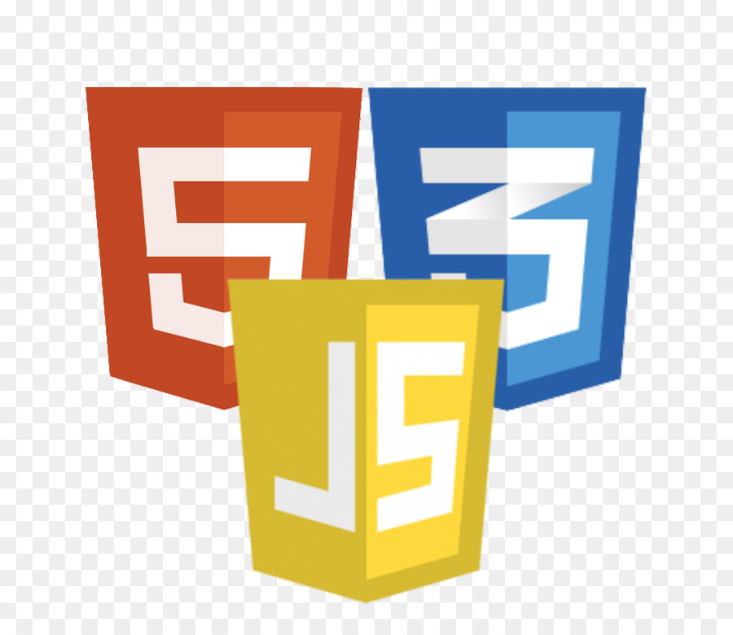
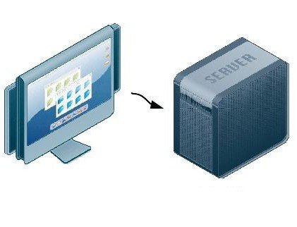
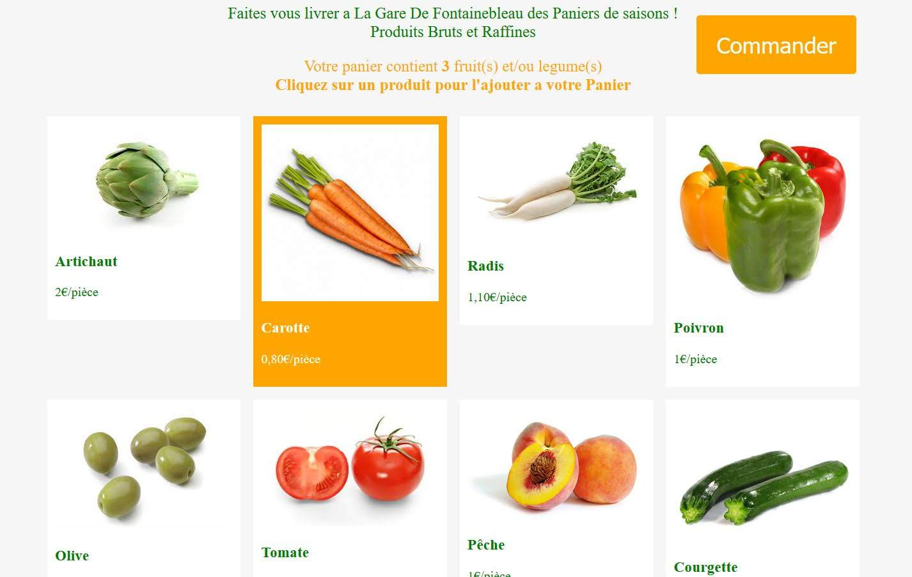
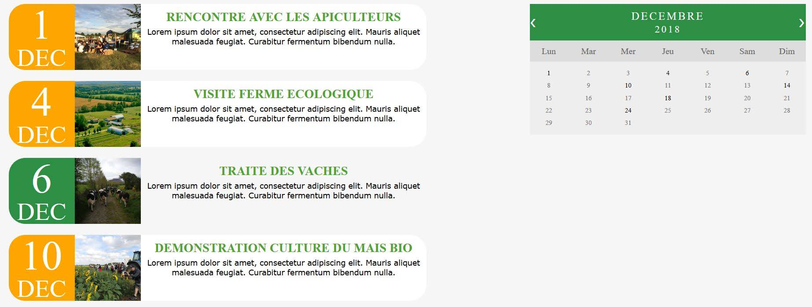
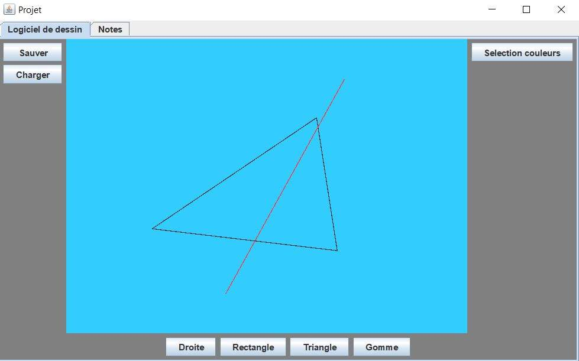
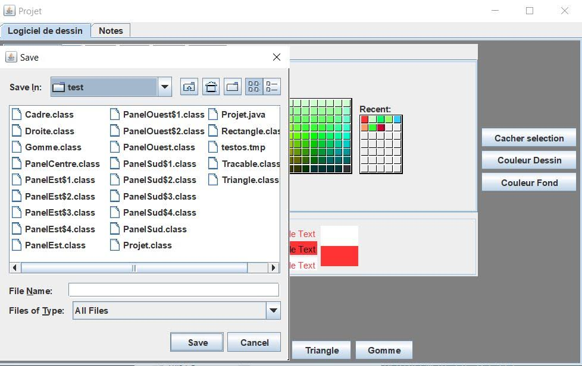

Etant né à l'ère du numérique, j'ai vite pris goût à l'informatique. J’ai grandi dans un milieu trilingue - je vivais à Paris en alternant avec l’Islande et j’ai vécu 2 ans à Cambridge, j’ai donc appris à m’adapter à chaque milieu. À chaque changement, mes repères étaient remis en perspective mais le numérique restait le même où que je sois. L’informatique est pour moi un moyen de connecter les frontières entre elles.
Ce que je préfère dans ce domaine, c'est la résolution de problèmes et la recherche de solutions visant à réduire les efforts non nécessaires. J’ai de l’expérience dans le développement web et je vise à être DevOps.
ISAR FRIDRIKSSON
Etudiant en informatique à l'IUT de Villetaneuse.
Apprenti développeur au Ministère de l'Intérieur.
PRÉSENTATION
PARCOURS
2018-2020
Développeur d'applications web en alternance au Ministère de l'Intérieur.
2018-2020
Formation à l'IUT Informatique de Villetaneuse
Université Paris 13
2018
Obtention du Bac Scientifique avec mention.
Options :
2017
Création du site de l'institut archéologique islandais.
Chargé de maintenance et support utilisateur aujourd'hui.
COMPETENCES

Django
Production et déploiement d'applications web

Java
Connaissances intermédiaires en programmation objet

SQL
Création de BDD
Fonctions SQL
Requêtes avancées

Python
Programmes algorithmiques et utilitaires poussés
Anglais Courant
TOEIC niveau C1

HTML/CSS/JS
Connaissances poussées
Gestion de projet informatique
Rédaction d'un cahier des charges fonctionnel et technique
Maîtrise des outils liés à la méthode AGILE

Structure de développement informatique
Mise en place des serveurs GitLab, BDD, Test et Production afin de mener un projet en équipe sur réseau privé
QUELQUES PROJETS...
Projets au Ministère de l'Intérieur
Outils de gestion sous forme d'applications web. Créées sous Django et dialoguant avec différents serveurs. Ces projets sont confidentiels.
Projet de création d'un site web
Exercice de création d'un site web en équipe pour un magasin bio.
ImagesSection achats :

Section calendrier :

Projet de gestion de projet
Rapport sur un projet de réaménagement d'une chambre en studio.
Projet d'IHM (Interface Homme-Machine)
Création d'un logiciel type "Paint" sous Java.
ImagesSection dessin :

Couleurs et enregistrement :
